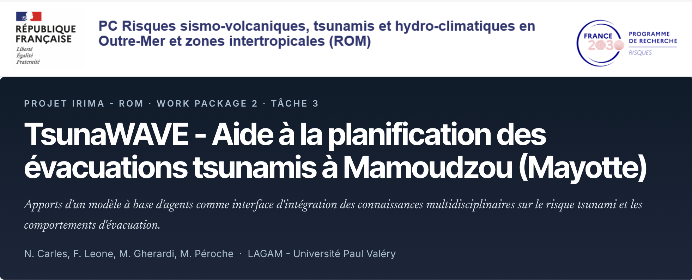
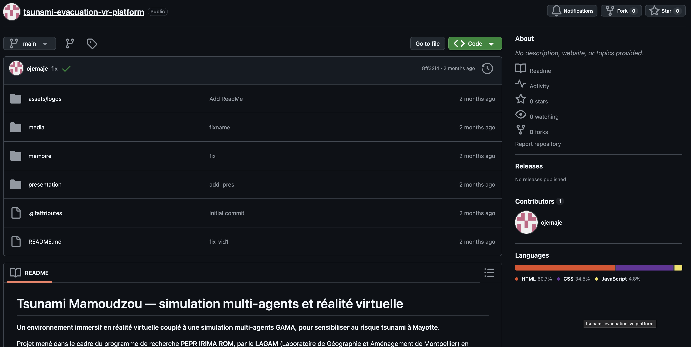
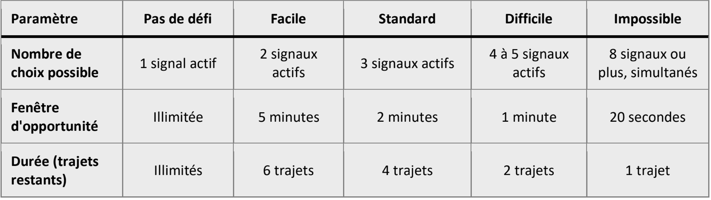

From simulation to situated experience: coupling GAMA and unity for immersive tsunami risk awareness in Mayotte
M. Corrigou, K. Chapuis, N. Carles, M. Gherardi and F. Leone


Tsunami follow the HILP principle
1979
A landslide-generated tsunami reached Nice Airport
2004
Indian Ocean earthquake-triggered tsunami · more than 200,000 deaths
BRGM · Lay et al. (2005)
Somewhere in the future
Piton 200 · a local tsunami leaves 10 to 20min to respond


From the Mediterranean ABM to Mayotte Tsunami risk

Mayotte model refinements
3D pedestrian evacuation · finer agent distribution · more social interaction
Dummy agents
Probabilistic milling time · limited social behaviour · perfect knowledge
One model, three ways to engage
ABM Simulation
Degradated alert system have non linear consequences on the gradual rollout of the roads and time of exposure
TsunaWAVE dashboard

Centralize thematic and multi-paradigm modeling perspectives on the Tsunami risk in Mayotte
VR serious game

A classroom experience to raise awarness and engage institutional with citizens in Tsunami readiness
Awareness through engagement
Purpose
Fun and engagement
are goals in themselves
are goals in themselves
Bring scientific reflection into the classroom
Audience
Young people
around age 11
around age 11
Learners who can carry what they learn to family and friends
Awareness
Recognize signs
and safe places
and safe places
Practice early response and avoid counter-effective evacuation behaviour
Game rules and design carry the message
Rational Game Design
A structured process
Atomic mechanics · declination table · variation matrices


Procedural rhetoric Bogost (2007)
Meaning through consequences
Players learn through the effects of the rules, rather than only through text or images
Two game phases, different implications for the ABM simulation
Phase 1 · upward alert
Players interpret early signs such as receding water or birds erratic behavior
ABM Simulation
- Phase 1 does not exist in the model
- Requires to add agent pre-evactuation activities
→
Alert triggers
10 to 20 min
Phase 1 player actions becomes alert-system parametrization, as in Carles et al. (2025)
→
Phase 2 · evacuation
Players respond to emerging signals from evacuation, e.g. route congestion
ABM Simulation
- Phase 2 correspond to former simulation start
- Agents are alerted, prepare and move like in Carles et al. (2025)
- Requires more realistic behaviour, e.g. agents jumpin groups and leave, pathfinding randomness
Three roles players can endorse in the game


No one can solve the puzzle alone: cooperation, trust and sharing determine simulation outcomes
The gameplay loops define the repeated actions of players at various level
Micro cycle
Observe, move and look for risk related signs
Meso cycle
Find, share, and validate information together
Macro cycle
Get as many people as possible to safety before the tsunami arrives: final players objectif
A meso cycle: from signal to consequence
Phase 1 · signs can be scripted
1 · POSTSignal appears
2 · NETWORKMatch cards
3 · POSTPrioritize and send
4 · FIELDSearch and photograph
5 · POSTValidate together
6 · GAMAEvacuation effect
Phase 2 · the signal emerges from the simulation
1 · POSTOnce the ABM starts, signals are no longer fully scripted
2 · NETWORKWhat does the Network know, and what should it share?
3 · POSTWhat should the Post prioritize and send?
4 · FIELDWhich picture and which card support the collective decision?
5 · POSTHow do players validate the shared evidence?
6 · GAMAHow does the decision affect evacuation?
The next steps priorities / remains to be done!
THE GAME
- Complete a vertical slice, e.g. currently network role is purely theoretical
- Identify all micro / meso cycles and complete the variation matrix
GAMA MODEL
- Rework the Post interface for gameplay
- Align simulation scheduling with both game phases
- Add realistic social evacuation and pre-evacuation behaviour
- Maintain the GAMA, SIMPLE and Unity workflow